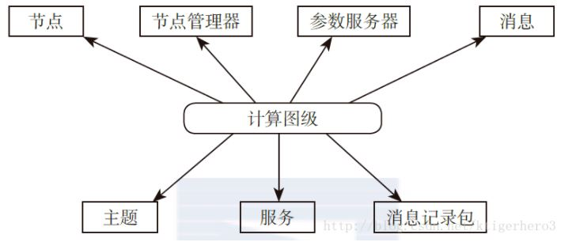

<!DOCTYPE html>


  <html class="light page-post">


<head><meta name="generator" content="Hexo 3.8.0">
  <meta charset="utf-8">
  
  <title>ros笔记 | 胡思旺</title>

  <meta name="viewport" content="width=device-width, initial-scale=1, maximum-scale=1">

  
    <meta name="keywords" content="全栈,微服务,Java,Netty,Vue,机器学习,Python">
  

  <meta name="description" content="Turtlebot学习笔记ubuntu14.04上安装ROS Indigo版本 设置安装软件源sudo sh -c ‘echo “deb http://packages.ros.org/ros/ubuntu $(lsb_release -sc) main” &amp;gt; /etc/apt/sources.list.d/ros-latest.list’   设置keysudo apt-key adv –">
<meta property="og:type" content="article">
<meta property="og:title" content="ros笔记">
<meta property="og:url" content="http://yoursite.com/2018/10/31/ros笔记/index.html">
<meta property="og:site_name" content="胡思旺">
<meta property="og:description" content="Turtlebot学习笔记ubuntu14.04上安装ROS Indigo版本 设置安装软件源sudo sh -c ‘echo “deb http://packages.ros.org/ros/ubuntu $(lsb_release -sc) main” &amp;gt; /etc/apt/sources.list.d/ros-latest.list’   设置keysudo apt-key adv –">
<meta property="og:locale" content="default">
<meta property="og:image" content="http://yoursite.com/2018/10/31/ros笔记/ros.JPG">
<meta property="og:updated_time" content="2018-12-04T03:59:59.581Z">
<meta name="twitter:card" content="summary">
<meta name="twitter:title" content="ros笔记">
<meta name="twitter:description" content="Turtlebot学习笔记ubuntu14.04上安装ROS Indigo版本 设置安装软件源sudo sh -c ‘echo “deb http://packages.ros.org/ros/ubuntu $(lsb_release -sc) main” &amp;gt; /etc/apt/sources.list.d/ros-latest.list’   设置keysudo apt-key adv –">
<meta name="twitter:image" content="http://yoursite.com/2018/10/31/ros笔记/ros.JPG">

  

  
    <link rel="icon" href="/favicon.ico">
  

  <link href="/css/styles.css?v=c114cben" rel="stylesheet">


  
    <link rel="stylesheet" href="/css/personal-style.css">
  

  

  
  <script type="text/javascript">
    var _hmt = _hmt || [];
    (function() {
      var hm = document.createElement("script");
      hm.src = "//hm.baidu.com/hm.js?57e94d016e201fba3603a8a2b0263af0";
      var s = document.getElementsByTagName("script")[0];
      s.parentNode.insertBefore(hm, s);
    })();
  </script>


  
  <script type="text/javascript">
	(function(){
	    var bp = document.createElement('script');
	    var curProtocol = window.location.protocol.split(':')[0];
	    if (curProtocol === 'https') {
	        bp.src = 'https://zz.bdstatic.com/linksubmit/push.js';        
	    }
	    else {
	        bp.src = 'http://push.zhanzhang.baidu.com/push.js';
	    }
	    var s = document.getElementsByTagName("script")[0];
	    s.parentNode.insertBefore(bp, s);
	})();
  </script>


  

</head>
</html>
<body>


  
    <span id="toolbox-mobile" class="toolbox-mobile">盒子</span>
  

  <div class="post-header CENTER">
   
  <div class="toolbox">
    <a class="toolbox-entry" href="/">
      <span class="toolbox-entry-text">盒子</span>
      <i class="icon-angle-down"></i>
      <i class="icon-home"></i>
    </a>
    <ul class="list-toolbox">
      
        <li class="item-toolbox">
          <a class="CIRCLE" href="/archives/" rel="noopener noreferrer" target="_self">
            博客
          </a>
        </li>
      
        <li class="item-toolbox">
          <a class="CIRCLE" href="/project/" rel="noopener noreferrer" target="_self">
            项目
          </a>
        </li>
      
        <li class="item-toolbox">
          <a class="CIRCLE" href="/category/" rel="noopener noreferrer" target="_self">
            分类
          </a>
        </li>
      
        <li class="item-toolbox">
          <a class="CIRCLE" href="/search/" rel="noopener noreferrer" target="_self">
            搜索
          </a>
        </li>
      
        <li class="item-toolbox">
          <a class="CIRCLE" href="/about/" rel="noopener noreferrer" target="_self">
            联系
          </a>
        </li>
      
    </ul>
  </div>


</div>


  <div id="toc" class="toc-article">
    <strong class="toc-title">文章目录</strong>
    <ol class="toc"><li class="toc-item toc-level-1"><a class="toc-link" href="#Turtlebot学习笔记"><span class="toc-text">Turtlebot学习笔记</span></a><ol class="toc-child"><li class="toc-item toc-level-2"><a class="toc-link" href="#ubuntu14-04上安装ROS-Indigo版本"><span class="toc-text">ubuntu14.04上安装ROS Indigo版本</span></a></li></ol></li><li class="toc-item toc-level-1"><a class="toc-link" href="#Turtlebot包安装"><span class="toc-text">Turtlebot包安装</span></a><ol class="toc-child"><li class="toc-item toc-level-2"><a class="toc-link" href="#安装ROS-Indigo对应的Turtlebot包"><span class="toc-text">安装ROS Indigo对应的Turtlebot包</span></a></li></ol></li><li class="toc-item toc-level-1"><a class="toc-link" href="#Turtlebot测试"><span class="toc-text">Turtlebot测试</span></a></li><li class="toc-item toc-level-1"><a class="toc-link" href="#Kinect配置"><span class="toc-text">Kinect配置</span></a></li><li class="toc-item toc-level-1"><a class="toc-link" href="#Kinect测试"><span class="toc-text">Kinect测试</span></a></li><li class="toc-item toc-level-1"><a class="toc-link" href="#Turtlebot跟随"><span class="toc-text">Turtlebot跟随</span></a></li><li class="toc-item toc-level-1"><a class="toc-link" href="#Turtlebot建图导航"><span class="toc-text">Turtlebot建图导航</span></a><ol class="toc-child"><li class="toc-item toc-level-2"><a class="toc-link" href="#创建地图"><span class="toc-text">创建地图</span></a></li><li class="toc-item toc-level-2"><a class="toc-link" href="#自主导航"><span class="toc-text">自主导航</span></a></li></ol></li><li class="toc-item toc-level-1"><a class="toc-link" href="#网络配置"><span class="toc-text">网络配置</span></a><ol class="toc-child"><li class="toc-item toc-level-2"><a class="toc-link" href="#网络测试"><span class="toc-text">网络测试</span></a></li></ol></li><li class="toc-item toc-level-1"><a class="toc-link" href="#ROS常用命令"><span class="toc-text">ROS常用命令</span></a></li><li class="toc-item toc-level-1"><a class="toc-link" href="#ROS工作原理"><span class="toc-text">ROS工作原理</span></a><ol class="toc-child"><li class="toc-item toc-level-2"><a class="toc-link" href="#ROS节点"><span class="toc-text">ROS节点</span></a></li><li class="toc-item toc-level-2"><a class="toc-link" href="#ROS主题"><span class="toc-text">ROS主题</span></a></li><li class="toc-item toc-level-2"><a class="toc-link" href="#ROS消息"><span class="toc-text">ROS消息</span></a></li><li class="toc-item toc-level-2"><a class="toc-link" href="#ROS服务"><span class="toc-text">ROS服务</span></a></li><li class="toc-item toc-level-2"><a class="toc-link" href="#ROS节点管理器"><span class="toc-text">ROS节点管理器</span></a></li><li class="toc-item toc-level-2"><a class="toc-link" href="#参数服务器"><span class="toc-text">参数服务器</span></a></li><li class="toc-item toc-level-2"><a class="toc-link" href="#消息记录包"><span class="toc-text">消息记录包</span></a></li></ol></li></ol>
  </div>


<div class="content content-post CENTER">
   <article id="post-ros笔记" class="article article-type-post" itemprop="blogPost">
  <header class="article-header">
    <h1 class="post-title">ros笔记</h1>

    <div class="article-meta">
      <span>
        <i class="icon-calendar"></i>
        <span>2018.10.31</span>
      </span>

      
        <span class="article-author">
          <i class="icon-user"></i>
          <span>siwang.hu</span>
        </span>
      

      
  <span class="article-category">
    <i class="icon-list"></i>
    <a class="article-category-link" href="/categories/ros/">ros</a>
  </span>


      
        <span>
          <i class="icon-comment"></i>
          <a href="http://www.github.com/siwanghu/2018/10/31/ros笔记/#disqus_thread"></a>
        </span>
      

      
      
    </div>
  </header>

  <div class="article-content">
    
      <h1 id="Turtlebot学习笔记"><a href="#Turtlebot学习笔记" class="headerlink" title="Turtlebot学习笔记"></a>Turtlebot学习笔记</h1><h2 id="ubuntu14-04上安装ROS-Indigo版本"><a href="#ubuntu14-04上安装ROS-Indigo版本" class="headerlink" title="ubuntu14.04上安装ROS Indigo版本"></a>ubuntu14.04上安装ROS Indigo版本</h2><blockquote>
<p><strong>设置安装软件源</strong><br>sudo sh -c ‘echo “deb <a href="http://packages.ros.org/ros/ubuntu" target="_blank" rel="noopener">http://packages.ros.org/ros/ubuntu</a> $(lsb_release -sc) main” &gt; /etc/apt/sources.list.d/ros-latest.list’  </p>
<p><strong>设置key</strong><br>sudo apt-key adv –keyserver hkp://ha.pool.sks-keyservers.net:80 –recv-key 421C365BD9FF1F717815A3895523BAEEB01FA116  </p>
<p><strong>安装</strong><br>sudo apt-get update<br>sudo apt-get install ros-indigo-desktop-full</p>
<p><strong>初始化rosdep</strong><br>sudo rosdep init<br>rosdep update  </p>
<p><strong>初始化ROS开发环境</strong><br>echo “source /opt/ros/indigo/setup.bash” &gt;&gt; ~/.bashrc<br>source ~/.bashrc  </p>
<p><strong>安装ROS工具包</strong><br>sudo apt-get install python-rosinstall</p>
</blockquote>
<h1 id="Turtlebot包安装"><a href="#Turtlebot包安装" class="headerlink" title="Turtlebot包安装"></a>Turtlebot包安装</h1><h2 id="安装ROS-Indigo对应的Turtlebot包"><a href="#安装ROS-Indigo对应的Turtlebot包" class="headerlink" title="安装ROS Indigo对应的Turtlebot包"></a>安装ROS Indigo对应的Turtlebot包</h2><blockquote>
<p><strong>ubuntu软件安装源更新</strong><br>sudo apt-get update  </p>
<p><strong>Turtlebot包安装</strong><br>sudo apt-get install ros-indigo-turtlebot ros-indigo-turtlebot-apps ros-indigo-turtlebot-interactions ros-indigo-turtlebot-simulator ros-indigo-kobuki-ftdi ros-indigo-rocon-remocon ros-indigo-rocon-qt-library ros-indigo-ar-track-alvar-msgs  </p>
</blockquote>
<h1 id="Turtlebot测试"><a href="#Turtlebot测试" class="headerlink" title="Turtlebot测试"></a>Turtlebot测试</h1><blockquote>
<p><strong>启动ROS</strong><br>roscore  </p>
<p><strong>设备驱动配置</strong><br>使用 ls /dev/kobuki命令，如果没有显示对应的设备驱动 <strong>/dev/kobuki</strong> 则使用命令 <strong>rosrun kobuki_ftdi create_udev_rules</strong> 添加，重启Turtlebot底盘即可  </p>
<p><strong>键盘控制底盘</strong><br>roslaunch turtlebot_bringup minimal.launch<br>roslaunch turtlebot_teleop keyboard_teleop.launch  </p>
<p><strong>通过发布主题命令控制底盘</strong><br>rostopic pub -r 10 /cmd_vel_mux/input/navi  geometry_msgs/Twist  ‘{linear:  {x: 0.1, y: 0.0, z: 0.0}, angular: {x: 0.0,y: 0.0,z: 0.0}}’  </p>
</blockquote>
<h1 id="Kinect配置"><a href="#Kinect配置" class="headerlink" title="Kinect配置"></a>Kinect配置</h1><blockquote>
<p><strong>安装驱动</strong><br>sudo apt-get install ros-indigo-openni-<em> ros-indigo-openni2-</em> ros-indigo-freenect-*<br>rospack profile  </p>
<p><strong>设置环境变量(非常重要,做任何事之前都要查看和配置)</strong><br>echo $TURTLEBOT_3D_SENSOR<br>如果输出的不是kinect则需要重新配置  </p>
<p><strong>如果你看到一个3D传感器，例如asus_xtion_pro，您将需要设置环境变量的默认值，修改和重新启动终端：</strong><br>echo “export TURTLEBOT_3D_SENSOR=kinect” &gt;&gt; .bashrc  </p>
</blockquote>
<h1 id="Kinect测试"><a href="#Kinect测试" class="headerlink" title="Kinect测试"></a>Kinect测试</h1><blockquote>
<p><strong>启动turtlebot</strong><br>roslaunch turtlebot_bringup minimal.launch  </p>
<p><strong>启动Kinect</strong><br>roslaunch freenect_launch freenect-registered-xyzrgb.launch （Kinect新版本）<br>roslaunch openni_launch openni.launch (Kinect或旧版本)<br><strong>针对Asus Xtion, Xtion Pro, or Primesense 1.08/1.09 cameras:</strong><br>roslaunch openni2_launch openni2.launch depth_registration:=true  </p>
<ul>
<li>图片 rosrun image_view image_view image:=/camera/rgb/image_color  <ul>
<li>深度图 rosrun image_view image_view image:=/camera/depth_registered/image  </li>
</ul>
</li>
</ul>
<p><strong>在RVIZ上查看相机</strong><br>roslaunch turtlebot_bringup 3dsensor.launch<br>roslaunch turtlebot_rviz_launchers view_robot.launch  </p>
</blockquote>
<h1 id="Turtlebot跟随"><a href="#Turtlebot跟随" class="headerlink" title="Turtlebot跟随"></a>Turtlebot跟随</h1><blockquote>
<p><strong>启动Turtlebot</strong><br>roslaunch turtlebot_bringup minimal.launch  </p>
<p><strong>启动跟随脚本</strong><br>roslaunch turtlebot_follower follower.launch  </p>
</blockquote>
<h1 id="Turtlebot建图导航"><a href="#Turtlebot建图导航" class="headerlink" title="Turtlebot建图导航"></a>Turtlebot建图导航</h1><h2 id="创建地图"><a href="#创建地图" class="headerlink" title="创建地图"></a>创建地图</h2><blockquote>
<p><strong>启动Turtlebot</strong> <em>roslaunch turtlebot_bringup minimal.launch</em>  </p>
<p><strong>创建地图</strong> <em>roslaunch turtlebot_navigation gmapping_demo.launch</em>  </p>
<p><strong>打开rviz</strong> <em>roslaunch turtlebot_rviz_launchers view_navigation.launch</em>  </p>
<p><strong>手动扫描建图</strong> <em>roslaunch turtlebot_teleop keyboard_teleop.launch</em>  </p>
<p><strong>保存地图</strong> <em>rosrun map_server map_saver -f /tmp/my_map</em>  </p>
</blockquote>
<h2 id="自主导航"><a href="#自主导航" class="headerlink" title="自主导航"></a>自主导航</h2><blockquote>
<p><strong>启动Turtlebot</strong> <em>roslaunch turtlebot_bringup minimal.launch</em>  </p>
<p><strong>启动导航模块</strong> <em>roslaunch turtlebot_navigation amcl_demo.launch map_file:=/tmp/my_map.yaml</em>  </p>
<p>导航模块有时启动失败可以使用这种方式启动(<strong>非常重要</strong>)<br>export TURTLEBOT_MAP_FILE=～/tmp/my_map.yaml<br>roslaunch turtlebot_navigation amcl_demo.launch  </p>
<p><strong>打开rviz</strong> <em>roslaunch turtlebot_rviz_launchers view_navigation.launch –screen</em>  </p>
<p><strong>当启动之后，TurtleBot并不知道自己在哪个位置,需要给它提供它在地图上的位置：</strong>  </p>
<ul>
<li>点击rviz中的”2D Pose Estimate”按钮</li>
<li>在地图上标出TurtleBot的近似位置，并指出TurtleBot的朝向（TurtleBot的正运动方向)  </li>
<li>点击rviz上的”2D Nav Goal”按钮  </li>
<li>在地图上标出TurtleBot的导航目标，并且指出其在导航终点的朝向  </li>
</ul>
</blockquote>
<h1 id="网络配置"><a href="#网络配置" class="headerlink" title="网络配置"></a>网络配置</h1><blockquote>
<p>主机也需要和笔记本一样安装ROS和Turtlebot包(<strong>参考上面ROS与Turtlebot包安装过程</strong>)  </p>
<p>主机与笔记本需要同步时钟，在主机与笔记本上都需要安装chrony(<strong>非常重要</strong>)<br>sudo apt-get install chrony<br>sudo ntpdate ntp.ubuntu.com  </p>
<p>在主机和笔记本电脑上都需要安装ssh-server<br>sudo apt-get install openssh-server  </p>
<p>在笔记本电脑端配置<br>echo export ROS_MASTER_URI=<a href="http://localhost:11311" target="_blank" rel="noopener">http://localhost:11311</a> &gt;&gt; ~/.bashrc<br>echo export ROS_HOSTNAME=<strong>笔记本电脑IP地址</strong> &gt;&gt; ~/.bashrc  </p>
<p>在主机端配置<br>echo export ROS_MASTER_URI=http://<strong>笔记本电脑IP地址</strong>:11311 &gt;&gt; ~/.bashrc<br>echo export ROS_HOSTNAME=<strong>主机IP地址</strong> &gt;&gt; ~/.bashrc  </p>
</blockquote>
<h2 id="网络测试"><a href="#网络测试" class="headerlink" title="网络测试"></a>网络测试</h2><blockquote>
<p>主机开启一个终端使用ssh命令登陆笔记本电脑<br>ssh username@ip<br>运行roscore  </p>
<p>主机在开启一个终端使用ssh命令登陆笔记本电脑<br>ssh username@ip<br>运行roslaunch turtlebot_bringup minimal.launch  </p>
<p>在主机开启一个终端<br>运行roslaunch turtlebot_teleop keyboard_teleop.launch<br>如果在主机端可以操作Turtlebot,说明网络配置成功  </p>
</blockquote>
<h1 id="ROS常用命令"><a href="#ROS常用命令" class="headerlink" title="ROS常用命令"></a>ROS常用命令</h1><blockquote>
<p>实时查看机器人坐标位置<br>rosrun tf tf_echo /map /base_link</p>
</blockquote>
<h1 id="ROS工作原理"><a href="#ROS工作原理" class="headerlink" title="ROS工作原理"></a>ROS工作原理</h1><blockquote>
<h2 id="ROS节点"><a href="#ROS节点" class="headerlink" title="ROS节点"></a><strong>ROS节点</strong></h2><p>使用命令<strong>rosnode</strong>查看Turtlebot运行启动时运行的ROS结点  </p>
<p>ROS 的一个基本目标是使机器人的很多节点node（可执行文件，几乎相对独立的小程序）能够同时运行。为此，这些节点必须能够彼此通信。ROS 中实现通信的关键部分就是ROS节点管理器。要启动节点管理器，使用如下命令：<strong>roscore</strong>。节点管理器应该在使用ROS的全部时间内持续运行。一个合理的工作流程是在一个终端启动roscore，然后打开其他终端运行其他程序。  </p>
<p><strong>/rosout</strong><br>rosout节点是一个特殊的节点，通过 roscore 自动启动。其作用有点类似于控制台程序中使用的标准输出（即 std::cout）。/rosout也是话题，所有的节点发布都向话题/rosout 发布消息，该话题由同名的 /rosout 节点订阅。这个话题的作用是用来生成各个节点的文本日志消息。在某些地方/rosout 既指节点又指话题。但 ROS 并不会这种重复的名字而混淆，因为 ROS 会根据上下文来推测我们讨论的是/rosout节点,还是/rosout话题。  </p>
<p><strong>/app_manager</strong><br>对于robot是一个公共接口结点,只需调用app_manager的接口就可以操控robot。  </p>
<p><strong>/master</strong><br>master提供topic的命名和注册service功能，也提供跟踪sub/pub功能。这个节点的角色就是让A节点能够定位到B节点。然后两个节点AB之间进行点对点的通信。<br>也提供参数服务器功能。  </p>
<h2 id="ROS主题"><a href="#ROS主题" class="headerlink" title="ROS主题"></a><strong>ROS主题</strong></h2><p>使用<strong>rostopic</strong>查看Turtlebox启动时运行的ROS主题  </p>
<p>主题是由ROS网络对消息进行路由和消息管理的数据总线。每一条消息都要发布到相应的主题。当一个节点发送数据时，我们就说该节点正在向主题发布消息。节点可以通过订阅某个主题，接收来自其他节点的消息。一个节点可以订阅一个主题，而并不需要该节点同时发布该主题。这就保证了消息的发布者和订阅者之间相互解耦，完全无需知晓对方的存在。主题的名称必须是独一无二的，否则在同名主题之间的消息路由就会发生错误。  </p>
<p><strong>/cmd_vel_mux/active</strong><br>记录每一刻的主动输入，如果没有人指挥机器人，就会闲置的话题  </p>
<p><strong>/cmd_vel_mux/input/XXX</strong><br>多路复用器输入主题。可以在配置文件中描述任意数量的输入主题  </p>
<h2 id="ROS消息"><a href="#ROS消息" class="headerlink" title="ROS消息"></a><strong>ROS消息</strong></h2><p><strong>rostopic info 节点名</strong>可以查看主题的消息类型  </p>
<p>节点通过消息完成彼此的沟通。消息包含一个节点发送到其他节点的数据信息。ROS 中包含很多种标准类型的消息，同时你也可以基于标准消息开发自定义类型的消息  </p>
<h2 id="ROS服务"><a href="#ROS服务" class="headerlink" title="ROS服务"></a><strong>ROS服务</strong></h2><p>可以使用<strong>rosservice</strong>命令查看当前的ROS服务  </p>
<p>在发布主题时，正在发送的数据能够以多对多的方式交互。但当你需要从某个节点获得一个请求或应答时，就不能通过主题来实现了。在这种情况下，服务能够允许我们直接与某个节点进行交互。此外，服务必须有一个唯一的名称。当一个节点提供某个服务时，所有的节点都可以通过使用ROS 客户端库所编写的代码与它通信。  </p>
<h2 id="ROS节点管理器"><a href="#ROS节点管理器" class="headerlink" title="ROS节点管理器"></a><strong>ROS节点管理器</strong></h2><p>节点管理器是ROS名称服务,能够帮助节点找到彼此。节点通过与节点管理器通信来报告他们的注册信息。值得注意的是,当这些节点和节点管理器通信时,它们可以接受其他注册节点的信息,并能保持通信正常。当这些注册信息改变时,节点管理器也会回调这些节点。所以,没有节点管理器,节点将不能相互找到,也不能进行消息交换或者调用服务。  </p>
<h2 id="参数服务器"><a href="#参数服务器" class="headerlink" title="参数服务器"></a><strong>参数服务器</strong></h2><p>是节点管理器的一部分,其允许数据通过关键词来存储。可以在结点运行时配置结点或改变节点的工作模式  </p>
<h2 id="消息记录包"><a href="#消息记录包" class="headerlink" title="消息记录包"></a><strong>消息记录包</strong></h2><p>使用<strong>rosbag record -a</strong>记录所有消息，消息记录包存放在当前文件夹下<br>使用<strong>rosbag play 包名</strong>回放消息  </p>
<p>消息记录包是一种用于保存和回放 ROS 消息数据的格式。消息记录包是检索传感器数据的重要机制。它可以获取并记录各种传感器数据，我们可以通过消息记录包来反复获取实验数据  </p>
<p>  </p>
</blockquote>

    
  </div>

</article>


   
  <div class="text-center donation">
    <div class="inner-donation">
      <span class="btn-donation">支持一下</span>
      <div class="donation-body">
        <div class="tip text-center">扫一扫，支持胡思旺</div>
        <ul>
        
          <li class="item">
            
              <span>微信扫一扫</span>
            
            
          </li>
        
          <li class="item">
            
              <span>支付宝扫一扫</span>
            
            
          </li>
        
        </ul>
      </div>
    </div>
  </div>


   
  <div class="box-prev-next clearfix">
    <a class="show pull-left" href="/2018/10/31/java流笔记/">
        <i class="icon icon-angle-left"></i>
    </a>
    <a class="show pull-right" href="/2018/10/31/jvm-gc笔记/">
        <i class="icon icon-angle-right"></i>
    </a>
  </div>


   
      <div class="git"></div>
   
</div>


  <a id="backTop" class="back-top">
    <i class="icon-angle-up"></i>
  </a>


  <div class="modal" id="modal">
  <span id="cover" class="cover hide"></span>
  <div id="modal-dialog" class="modal-dialog hide-dialog">
    <div class="modal-header">
      <span id="close" class="btn-close">关闭</span>
    </div>
    <hr>
    <div class="modal-body">
      <ul class="list-toolbox">
        
          <li class="item-toolbox">
            <a class="CIRCLE" href="/archives/" rel="noopener noreferrer" target="_self">
              博客
            </a>
          </li>
        
          <li class="item-toolbox">
            <a class="CIRCLE" href="/project/" rel="noopener noreferrer" target="_self">
              项目
            </a>
          </li>
        
          <li class="item-toolbox">
            <a class="CIRCLE" href="/category/" rel="noopener noreferrer" target="_self">
              分类
            </a>
          </li>
        
          <li class="item-toolbox">
            <a class="CIRCLE" href="/search/" rel="noopener noreferrer" target="_self">
              搜索
            </a>
          </li>
        
          <li class="item-toolbox">
            <a class="CIRCLE" href="/about/" rel="noopener noreferrer" target="_self">
              联系
            </a>
          </li>
        
      </ul>

    </div>
  </div>
</div>


  
      <div class="fexo-comments comments-post">
    
  <section class="disqus-comments">
    <div id="disqus_thread">
      <noscript>Please enable JavaScript to view the <a href="//disqus.com/?ref_noscript">comments powered by Disqus.</a></noscript>
    </div>
  </section>

  <script>
    var disqus_shortname = 'forsigner';
    
    var disqus_url = 'http://yoursite.com/2018/10/31/ros笔记/';
    
    (function(){
      var dsq = document.createElement('script');
      dsq.type = 'text/javascript';
      dsq.async = true;
      dsq.src = '//' + disqus_shortname + '.disqus.com/embed.js';
      (document.getElementsByTagName('head')[0] || document.getElementsByTagName('body')[0]).appendChild(dsq);
    })();
  </script>

  <script id="dsq-count-scr" src="//forsigner.disqus.com/count.js" async></script>


    

    
    

  <div id="gitment-comments"></div>
  <link rel="stylesheet" href="https://imsun.github.io/gitment/style/default.css">
  <script src="https://imsun.github.io/gitment/dist/gitment.browser.js"></script>
  <script>
    (function () {
      var gitment = new Gitment({
        owner: 'siwanghu',
        repo: 'my-blog-comment',
        oauth: {
          client_id: 'cfd421630edbd2213b4b',
          client_secret: '9584fd5ff8537ec1b2ea3509dda8f7904b1f58bc'
        },
        
        
        
        
        
        
        
        
      })
      gitment.render('gitment-comments')
    })()
  </script>


    

    
    

  </div>

  

  <script type="text/javascript">
  function loadScript(url, callback) {
    var script = document.createElement('script')
    script.type = 'text/javascript';

    if (script.readyState) { //IE
      script.onreadystatechange = function() {
        if (script.readyState == 'loaded' ||
          script.readyState == 'complete') {
          script.onreadystatechange = null;
          callback();
        }
      };
    } else { //Others
      script.onload = function() {
        callback();
      };
    }

    script.src = url;
    document.getElementsByTagName('head')[0].appendChild(script);
  }

  window.onload = function() {
    loadScript('/js/bundle.js?235683', function() {
      // load success
    });
  }
</script>

</body>
</html>
